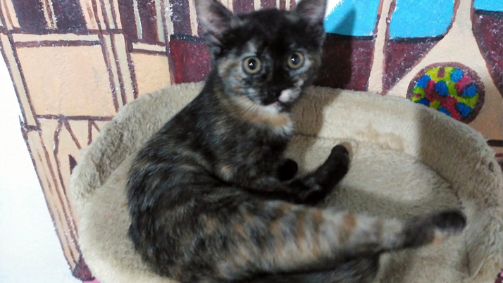

Nuestros Animales en Adopción
Estos son algunos de los perros y gatos que están buscando un hogar lleno de amor:
Perros


Gatos



Somos un refugio sin ánimo de lucro dedicado a rescatar, cuidar y encontrar hogares para perros y gatos. También disponemos de una tienda de productos básicos para ayudar a financiar nuestros cuidados.
Ven y conoce a nuestros animales :DEstos son algunos de los perros y gatos que están buscando un hogar lleno de amor: